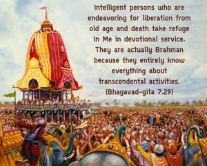

Intelligent persons who are endeavoring for liberation from old age and death take refuge in Me in devotional service. They are actually Brahman because they entirely know everything about transcendental activities.

Birth, death, old age and diseases affect this material body, but not the spiritual body. There is no birth, death, old age and disease for the spiritual body, so one who attains a spiritual body, becomes one of the associates of the Supreme Personality of Godhead and engages in eternal devotional service is really liberated. Ahaṁ brahmāsmi: I am spirit. It is said that one should understand that he is Brahman, spirit soul. This Brahman conception of life is also in devotional service, as described in this verse. The pure devotees are transcendentally situated on the Brahman platform, and they know everything about transcendental activities.
Four kinds of impure devotees who engage themselves in the transcendental service of the Lord achieve their respective goals, and by the grace of the Supreme Lord, when they are fully Kṛṣṇa conscious, they actually enjoy spiritual association with the Supreme Lord. But those who are worshipers of demigods never reach the Supreme Lord in His supreme planet. Even the less intelligent Brahman-realized persons cannot reach the supreme planet of Kṛṣṇa known as Goloka Vṛndāvana. Only persons who perform activities in Kṛṣṇa consciousness (mām āśritya) are actually entitled to be called Brahman, because they are actually endeavoring to reach the Kṛṣṇa planet. Such persons have no misgivings about Kṛṣṇa, and thus they are factually Brahman.
Those who are engaged in worshiping the form or arcā of the Lord, or who are engaged in meditation on the Lord simply for liberation from material bondage, also know, by the grace of the Lord, the purports of Brahman, adhibhūta, etc., as explained by the Lord in the next chapter.